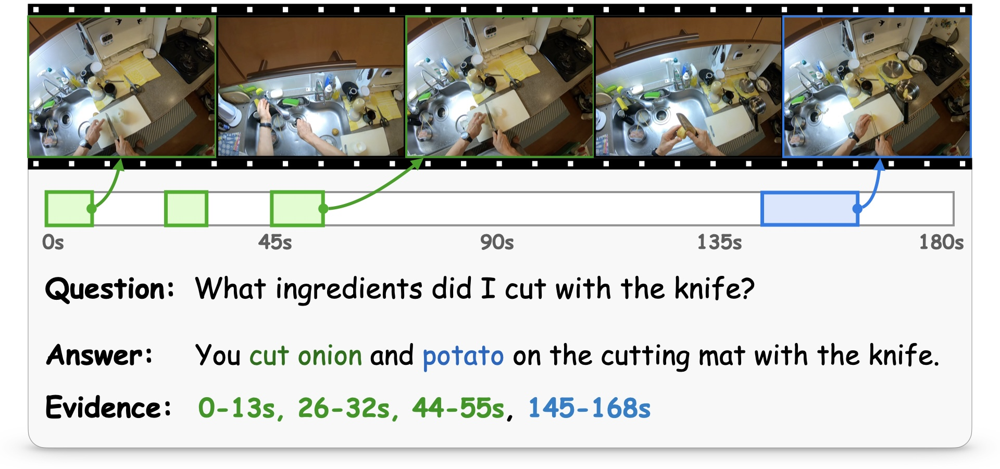
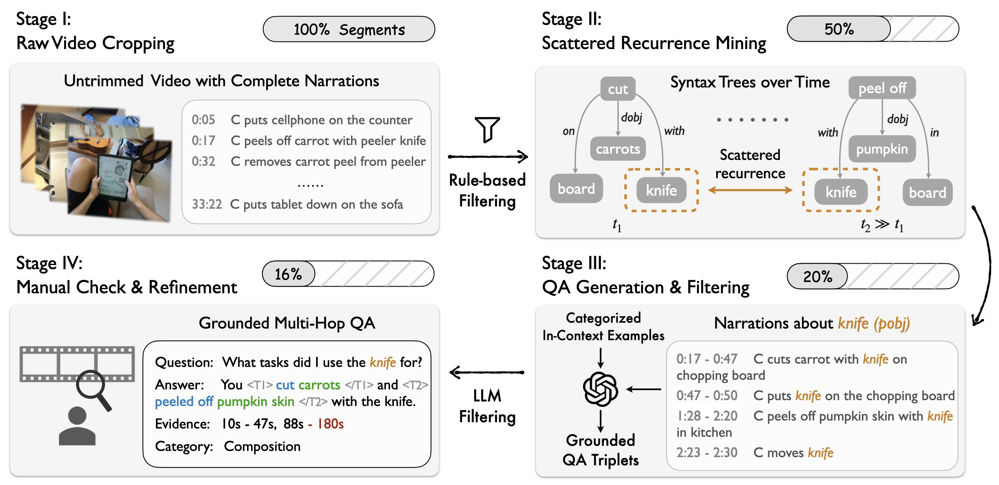
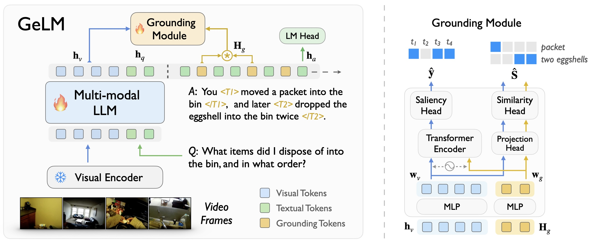
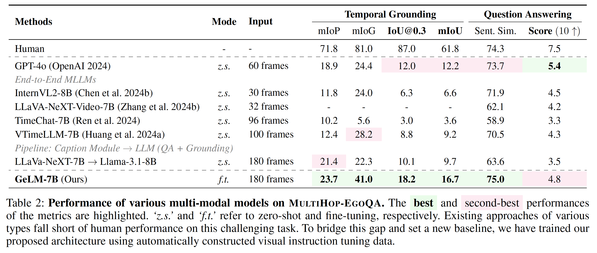

Grounded Multi-Hop VideoQA in Long-Form Egocentric Videos
|
1Shanghai Jiao Tong University
|
2Shanghai AI Laboratory
|
Abstract
This paper considers the problem of Multi-Hop Video Question Answering (MH-VidQA) in
long-form
egocentric
videos. This task not only requires to answer visual questions, but also to localize multiple relevant time
intervals within the video as visual evidences. We develop an automated pipeline to mine multi-hop
question-answering pairs with associated temporal evidence, enabling to construct a large-scale dataset for
instruction-tuning. To monitor the progress of this new task, we further curate a high-quality benchmark,
MultiHop-EgoQA, through meticulous manual verification and refinement. Our experiments reveal
that
existing
multi-modal systems exhibit inadequate multi-hop grounding and reasoning abilities, resulting in
unsatisfactory performance. We then propose a novel architecture, termed as GeLM, to leverage
the
world
knowledge reasoning capabilities of multi-modal large language models (LLMs), while incorporating a
grounding module to retrieve temporal evidence in the video with flexible grounding tokens. Once trained on
our constructed visual instruction data, GeLM demonstrates enhanced multi-hop grounding and reasoning
capabilities, establishing a new baseline for this challenging task. Furthermore, when trained on third-view
videos, the same architecture also achieves state-of-the-art performance on the existing single-hop VidQA
benchmark, ActivityNet-RTL, showing the architecture's effectiveness.
Problem Background

In the existing literature, video question-answering tasks for egocentric videos typically assume
relevance to a single time interval, thus limiting their applicability in understanding complex
questions that necessitate reasoning across multiple time spans in a video. To bridge the gap, this
paper introduces the problem of Multi-Hop Video Question-Answering (MH-VidQA). As
illustrated
in the figure, this task requires the model to simultaneously answer questions that involve
visual information from multiple time intervals and localize these time spans as evidence within long,
egocentric videos.
MultiHop-EgoQA: Data Curation Pipeline

Illustration of our data curation pipeline. To collect large-scale Multi-Hop VidQA data, we have
developed an automated pipeline. We begin by using action scene graphs to identify potential multi-hop
reasoning questions based on the syntax trees of annotated narrations. Next, we use GPT-4o to generate data
samples that include questions, answers, and relevant time spans. Finally, we perform manual validation and
refinement to create the new benchmark.
GeLM: A Baseline Method for MH-VidQA
Existing models for video question answering typically provide answers without supporting temporal evidence,
or are restricted to identifying a single time interval.
Here, we propose a novel architecture, termed as GeLM: Grounding Scattered
Evidence with Large Language Model for Multi-Hop Video
Question-Answering. As
depicted in the figure,
our model primarily comprises a multi-modal large language model and a grounding module, with special
grounding tokens indicating the time span of the enclosed key information in the
response. To ground the time spans that support the answer,
we design an evidence grounding module that processes a variable number of grounding queries and predicts
the corresponding temporal proposals in the video.

Results
We evaluate several latest multi-modal models on MultiHop-EgoQA, exploring their
abilities of
multi-hop reasoning and temporal grounding.
From experiments presented in the following table, we can draw the following observations:
-
Both the proprietary model and open-source multi-modal LLMs significantly lag behind human
performance,
underscoring the current limitations in multi-hop reasoning and grounding capabilities within multi-modal
systems.
-
Reasoning and grounding abilities are disentangled in existing visual systems. For instance,
LLaVA-NeXT-Video is unable to handle requests involving temporal grounding, but can still answer part of
questions that do not involve temporal grounding.
-
Instruction-tuning with single-hop data does not guarantee superiority in multi-hop grounding. For
example, despite TimeChat and VTimeLLM having been fine-tuned with temporally aware instructions and
multi-turn conversations, the ability to ground multiple intervals for a single query remains limited.
-
Dense captions do indeed help temporal grounding, but errors may cascade. Although captioning at
per second provides explicit temporal information for grounding, errors in the captioning process are
difficult to correct through the subsequent stages.

Overall, we have established a new baseline method for this benchmark, outperforming current systems and
explicitly supporting scattered evidence grounding.
Acknowledgements
Based on a template by Phillip Isola and Richard Zhang.